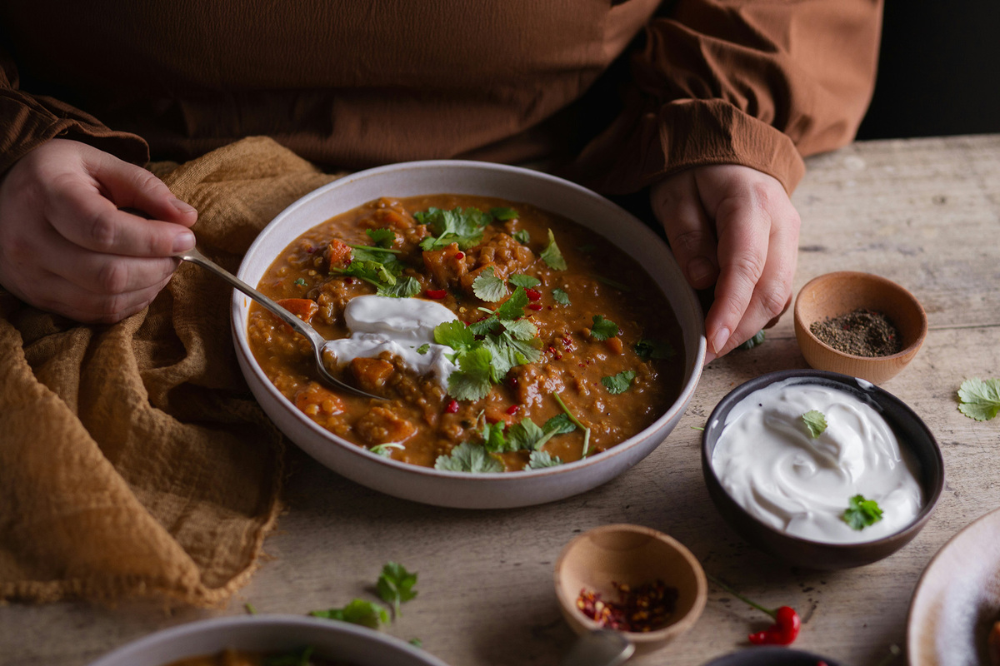

About us
A Dublin-based ingredient delivery service designed for people who believe cooking at home should be simple, enjoyable, and never feel like a chore.

The best meal you'll ever cook is the one you make yourself — with the right ingredients.
Our story
Avocado Bean was born in a small kitchen in Dublin in 2024, from a simple yet powerful idea. While planning a dinner with friends, we found ourselves wondering: why does cooking something healthy and delicious at home often feel so complicated? In that moment, everything clicked.
We realized that home cooking shouldn't be stressful or time-consuming — it should be easy, enjoyable, and something to look forward to. That's how Avocado Bean came to life: a service created to simplify the cooking experience and bring fresh, high-quality ingredients straight to your door.
For those who are tired of fast food and ready to embrace a healthier lifestyle, we're here to make that transition effortless — one meal at a time.
The process
Explore our weekly recipe selection — bowls, soups, salads, toasts and snacks. Each recipe shows the ingredients, prep time and difficulty level upfront. No surprises.
We source your ingredients fresh — organic where possible, always locally grown. Everything arrives pre-measured and labelled, ready for you to cook. No waste, no guesswork.
Follow our clear, step-by-step recipe guide and cook something extraordinary at home. No experience needed — just a pan, your ingredients, and about 30 minutes of your time.
What we stand for
We work directly with Irish organic farms to source seasonal produce. No pesticides, no long supply chains — just honest ingredients grown the right way.
Plant-based food should be the most exciting food on the table. Every recipe we create is designed to be bold in flavour, satisfying in texture, and genuinely delicious — not just nutritious.
Pre-measured ingredients mean you only get exactly what you need. Less food waste, less packaging, less guilt — and a cleaner kitchen at the end of it.
Ready to cook?
Browse this week's recipes, pick what excites you, and we'll have your ingredients at your door.